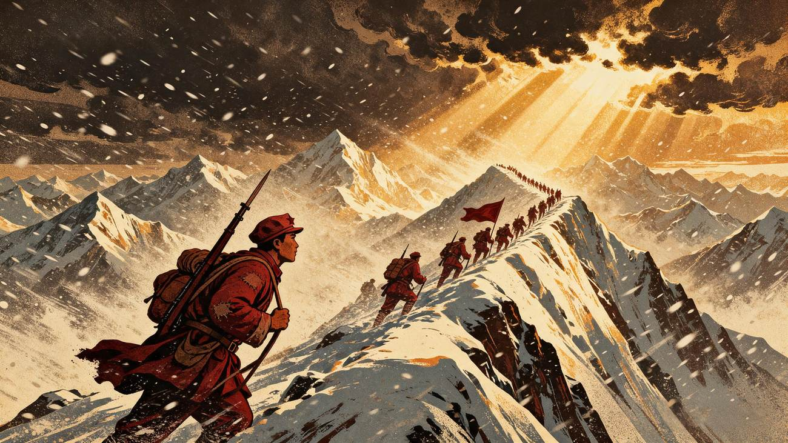
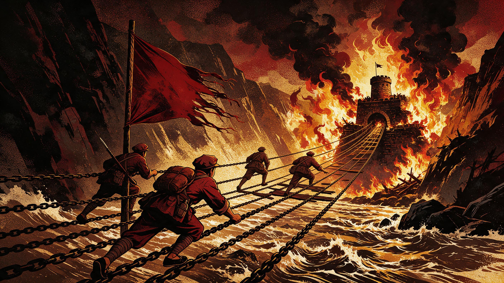
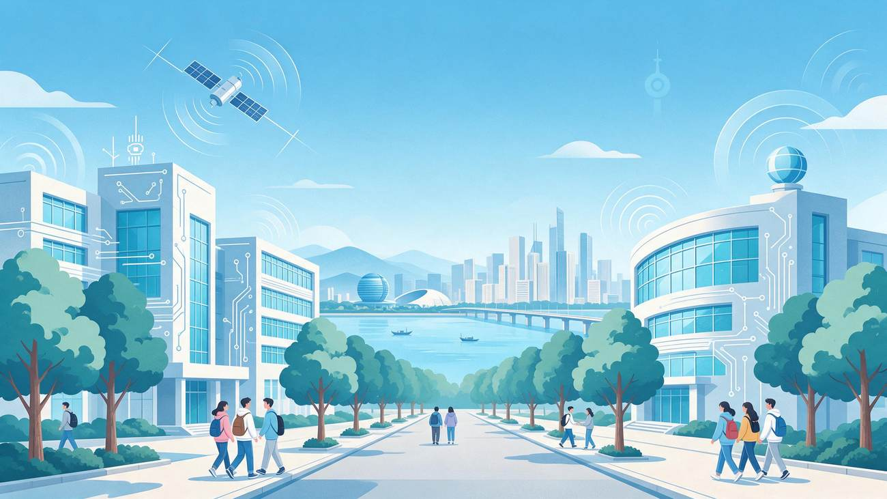

1936
三军会师 · 长征胜利
红一、红二、红四方面军会宁会师，宣告国民党反动派围追堵截的破产，播下革命的火种。
PROLOGUE
2026 年，我们站在两个纪念的交汇点上：九十年前，红军三大主力在甘肃会宁胜利会师，长征宣告结束，中国革命转危为安； 七十年前，新中国"一五"计划的工业化号角中，杭电的前身在杭州诞生，与共和国电子工业同频起步。
一边是"革命理想高于天"的万里远征，一边是"为国家的电子工业培养人才"的默默耕耘——两条看似不同的道路， 却有着同一种精神底色：为国家、为民族，向着最难处攻坚，向着最远处进发。
本站以「过去 — 现在 — 未来」为轴，分别讲述长征与杭电的故事，并在「精神交汇」篇章中寻找二者的血脉联系。
红一、红二、红四方面军会宁会师，宣告国民党反动派围追堵截的破产，播下革命的火种。
国家第二机械工业部创建杭州航空工业财经学校，杭电的前身应国家工业之运而生。
90 与 70 在同一年相遇。纪念不是回望终点，而是站上新的出发点。
CHAPTER ONE
九十年前，一群平均年龄不足二十岁的年轻人，用脚步丈量信仰。


中央红军 8.6 万余人从江西瑞金、于都出发，告别苏区，踏上未知的远征。
遵义会议确立了毛泽东同志在党中央和红军的领导地位，在极端危急的关头挽救了党、挽救了红军、挽救了中国革命。
22 名勇士飞夺泸定桥，红军主力跨越天险大渡河，粉碎了敌人围歼的企图。
中央红军率先到达陕北吴起镇，纵横十一省，行程二万五千里。
红一、红二、红四方面军三大主力胜利会师，长征以我们的胜利、敌人的失败而告终。
"长征是历史纪录上的第一次，长征是宣言书，长征是宣传队，长征是播种机。" —— 毛泽东
把全国人民和中华民族的根本利益看得高于一切，坚定革命的理想和信念，坚信正义事业必然胜利。
为了救国救民，不怕任何艰难险阻，不惜付出一切牺牲。
坚持独立自主、实事求是，一切从实际出发。
顾全大局、严守纪律、紧密团结。
紧紧依靠人民群众，同人民群众生死相依、患难与共、艰苦奋斗。
"每一代人有每一代人的长征路，每一代人都要走好自己的长征路。" —— 习近平在纪念红军长征胜利 80 周年大会上的讲话
芯片、基础软件、高端装备——新一代的"娄山关""腊子口"，等着新一代人去攻克。
从"让穷苦人过上好日子"的初心，到"一个都不能少"的承诺，初心未改，道路常新。
长征永远在路上。我们的长征，是要把先辈描画的蓝图一笔一笔变成现实。
CHAPTER TWO
七十年，一所大学与共和国电子工业同行。
国家第二机械工业部创建杭州航空工业财经学校——杭电的前身在"一五"计划的工业化大潮中诞生，自带国防工业基因。
历经杭州航空工业学校、浙江电机专科学校、杭州无线电工业学校等发展阶段，校名几度更迭，始终扎根无线电与电子工业人才培养。
经国务院批准，在杭州无线电工业学校基础上建立杭州电子工业学院，开启本科办学新阶段。
获批硕士学位授予权，集成电路相关学科自此深耕四十余年。
经教育部批准，更名为杭州电子科技大学，建成电子信息特色突出的多科性大学。

工、理、经、管、文、法、艺多学科交叉渗透的高水平研究教学型大学，经管学科优势明显。
浙江省人民政府与国家国防科技工业局共建高校，省属高校中唯一拥有国防特色重点专业。
入选全国首批"集成电路科学与工程"一级学科博士学位授权点——全国仅 18 所，浙江省属高校唯一。
参与"熊猫系统"等国家级重大项目，斩获国家科技进步一等奖、二等奖，与华为海思、中芯国际等共建人才培养基地。
海康威视创始人陈宗年等一批知名企业家出自杭电，"杭电系"成为中国电子信息产业的一支劲旅。
校训“笃学力行、守正求新”，校风“团结勤奋、求实创新”，传承“国家大事，千万尽力”的精神血脉。
从浙江省重点建设高校到高水平大学建设高校，向着中国特色一流大学的目标坚定迈进。
数字经济浪潮之巅，杭电人是数字中国建设的生力军与国家队。
在集成电路、人工智能、信息安全的前沿，把"卡脖子"清单变成创新成绩单。
CHAPTER THREE
把两条时间线并排放在一起，会发现它们不是平行线，而是同一条精神河流的上游与下游。
长征路上，通信兵背着电台行军，守护人民军队最早的"信息命脉"；近二十年后，国家在电子工业布局中创建杭电前身；又七十年，杭电人把芯片、雷达、通信做成了毕生事业。当年"半部电台"的火种，如今是实验室里彻夜的灯光。
长征精神 → 延安精神 → "两弹一星"精神 → 科学家精神 → 杭电"国家大事，千万尽力"。每一次精神接力，都把"为了谁"这个问题回答得更加清晰：为了这个国家，为了这片土地上的人民。
长征，为的是民族救亡；建校，为的是工业强国。相隔二十年，同样是在最艰难的时刻出发，同样把个人前途写进国家命运——这是两条道路最深的相同之处。
当年红军将士平均年龄不足二十岁；今天，在实验室里攻克"卡脖子"技术的杭电青年，同样年轻。雪山草地换成了代码与晶圆，但"向着最难处攻坚"的姿势，从未改变。
| 维度 | 长征（1934—1936） | 杭电（1956—2026） |
|---|---|---|
| 出发 | 为救亡图存，星夜渡过于都河 | 为工业强国，诞生于"一五"建设潮 |
| 信念 | 革命理想高于天 | 国家大事，千万尽力 |
| 关隘 | 雪山草地、大渡桥横 | 技术封锁、攻关"卡脖子" |
| 会师 | 三军会宁会师，力量汇聚 | 多学科交叉、产教融合聚力 |
| 远方 | 奔赴陕北，开创新局面 | 面向 2035，数字中国新征途 |
九十年前，他们翻过雪山；
七十年前，我们建起课堂；
今天，我们把课堂里的灯，点成他们没能看到的万家灯火。
CHAPTER FOUR
看完两条道路的故事，轮到我们交答卷了——四道关卡，等你全部点亮。
长征是一步步走出来的：这里没有路线提示，只靠你自己判断先后。走错一站就记一次「绕路」，零绕路通关才算真本事。
👆 点击上方地标，开始你的长征。
8 组事件与年代，先点左侧事件、再点右侧年代，配对正确自动锁定。限时 90 秒，点击次数越少越强。
共 15 题（选择 + 判断），限时 120 秒（点击第一题后开始计时），答错扣 10 秒。连击可叠加连击特效，满分才算真正过关。
写下你的宣言，它会保存在本机上。